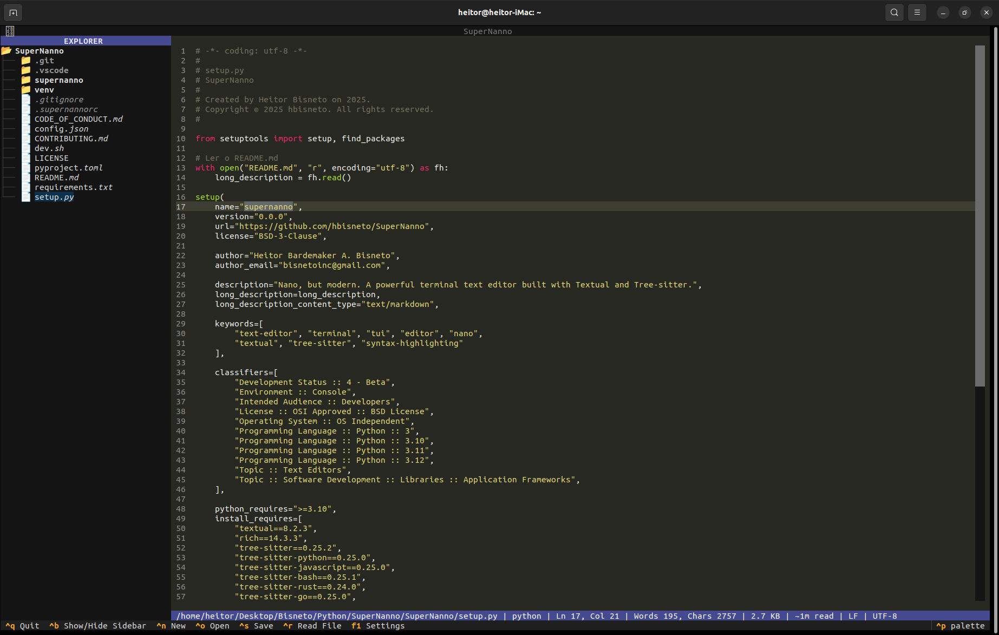
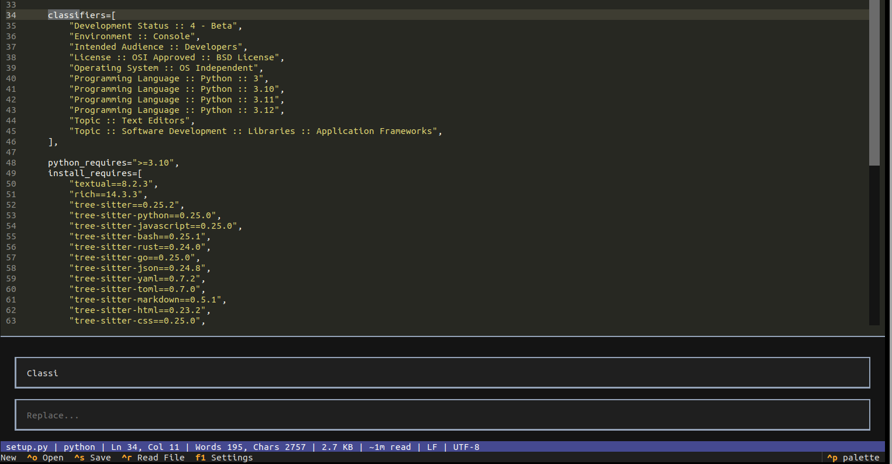
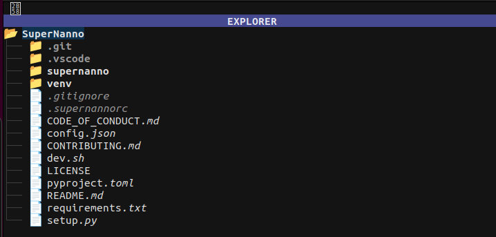
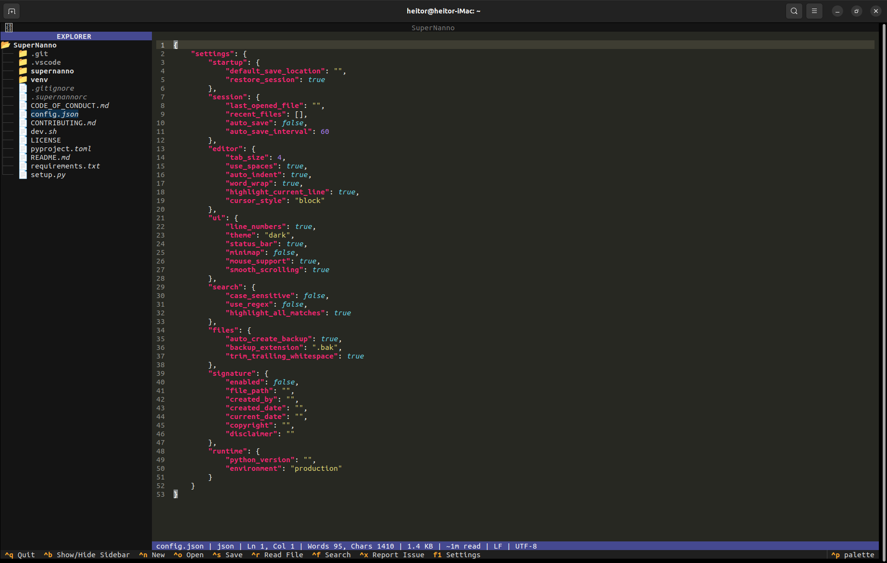
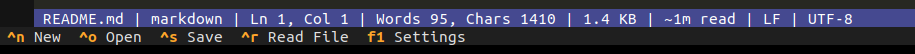

Nano, but modern. With UI, syntax highlighting, and a real developer workflow.
A modern terminal text editor built on Textual and Tree-sitter. Modular architecture with event-driven design, state management, dedicated services, and structured JSON logging — all within the terminal.
Visual overview of SuperNanno's main features and interface

Full-featured text editor based on Textual's TextArea widget. Advanced cursor support, text selection, smooth scrolling, current line highlighting, and configurable cursor_style: block.

Strategic Search Engine: Advanced search architecture.

DirectoryTree integrated into the sidebar.
Navigate the filesystem, open files with a click, toggle with CTRL+B. Configurable width and root directory with automatic refresh.

High-performance highlighting powered by Tree-sitter with intelligent fallback to Pygments. Automatic language detection by file extension using an internal language_map. Supports 16 languages.

StatusService with five visual levels, persistent message locking, deduplication, and automatic reset. Displays file info, language, encoding, EOL, cursor position, and document metrics.
SuperNanno is built with a modular, event-driven architecture powered by services and robust state management. Every feature is implemented with comprehensive resilience, structured logging, and intelligent recovery mechanisms.
TextArea widget. Advanced cursor support, text selection, smooth scrolling, current line highlighting, and configurable cursor_style: block.language_map. Supports 16 languages.FileManager with atomic writes (write-then-rename via .tmp), intelligent encoding fallbacks, resilient backup systems, and comprehensive handling of filesystem operations.SearchEngine + SearchRegistry + SearchStrategy. Supports literal, case-sensitive, and regex queries. Individual and global replace with smooth match navigation.CTRL+S) with atomic writes. Inline Save As with path input. Read-only mode (-v/--view). Real-time dirty state detection and automatic directory tree refresh.SessionManager with atomic JSON persistence, recent files history (last 10), automatic restoration of the last session, and intelligent backup of corrupted session files.DiagnosticService assigns unique correlation_id (8 hex chars) to operations. Automatic categorization and MD5 fingerprinting for precise observability and issue deduplication.CTRL+X to generate a comprehensive diagnostic report and open a GitHub issue directly from the editor. Includes editor state, readable logs, and a bundled ZIP for streamlined contribution..supernannorc and applies changes in real-time without restart. Exponential backoff with graceful degradation for maximum stability.DirectoryTree integrated into the sidebar. Navigate the filesystem, open files with a click, toggle with CTRL+B. Configurable width and root directory with automatic refresh.StructuredLogger produces rich JSON entries with ISO timestamps, correlation IDs, context, and editor state. Daily log rotation with best-effort reliability that never impacts editor stability.-B/--backup or set backup. Configurable backup directory. Non-blocking operation ensures primary save performance is never affected.check_dirty_before system prevents destructive actions on unsaved changes. Double confirmation for quit with clear status bar guidance and preserved pending actions.StatusService with five visual levels, persistent message locking, deduplication, and automatic reset. Displays file info, language, encoding, EOL, cursor position, and document metrics.SettingsScreen with clean grid layout. Supports session restore, auto-save, line numbers and more. Changes saved safely through ConfigManager with per-field validation.config.json. Configurable fields including author, dates, copyright, and disclaimers. Fully toggleable per file type.
The StatusService provides rich visual feedback with message persistence, deduplication, and configurable auto-reset.
ctx.status.success("(File): Saved") — typed message with automatic 2s timeoutctx.status.persist("(Search): Find mode") — locks state until explicitly clearedAll shortcuts defined in ui/bindings.py and registered through Textual's BINDINGS system.
Full parser in cli/parser.py · Models in cli/models.py · Constants in cli/constants.py.
Compatible with original nano syntax.
| FILE | str | None |
Path to the file to open on startup. Relative or absolute.
$ supernanno my_file.py
|
| +LINE | int | None |
Positions cursor at the specified line on open. Inspired by nano syntax.
$ supernanno +25 main.py
|
| +LINE,COL | int, int |
Positions cursor at specific line and column. Safe parsing with sensible fallbacks.
$ supernanno +25,8 main.py
|
| +/SEARCH | str | None |
Opens file and initiates search for the term automatically.
$ supernanno +/TODO app.py
|
| -v / --view | bool |
Opens in read-only mode (
ctx.read_only = True).$ supernanno -v config.json
|
| -B / --backup | bool |
Enables automatic backups before each save.
$ supernanno -B file.py
|
| -C <dir> / --backupdir | str | None |
Sets backup directory. Supports
~/ expansion.$ supernanno -B -C ~/Backups/ file.py
|
| -h / --help | bool |
Displays complete help text and exits.
$ supernanno --help
|
| -V / --version | bool |
Displays version and exits.
$ supernanno --version
|
.supernannorc
The .supernannorc file in your project root defines editor preferences.
Parsed by services/rc_parser.py with smart encoding fallbacks.
Monitored in real-time by the asynchronous Config Watcher.
.supernannorc content:| backup | flag (bool) | Enables automatic backup before saving. Creates .bak in backupdir. |
| backupdir | ~/path/ | Directory for backups. Supports ~/. Default: ~/.config/Bisneto/SuperNanno/Backup. |
| configwatcher | flag (bool) | Monitors .supernannorc and applies changes live. |
| configwatcherinterval | int (seconds) | Interval between config watcher checks. Minimum: 1s. |
| indenttype | spaces | tabs | Indentation type applied to editor. |
| operatingdir | ~/path/ | Root directory for sidebar. Ignored if file opened via CLI. |
| pathdisplay | full | name | Controls path display in status bar: full path or filename only. |
| restoresession | flag (bool) | Automatically restores last session on startup. |
| sidebar | flag (bool) | Controls sidebar visibility on startup. |
| sidebarwidth | int (20–80) | Sidebar width in columns. Clamped between 20 and 80. |
| tabbehavior | indent | ... | Tab key behavior in editor. |
| tabsize | int | Tab/indent width. Default: 4. |
| debug | flag (bool) | Enables debug output in StatusService. |
| auto_save | false | Periodic auto-save (interval controlled by auto_save_interval). |
| highlight_current_line | true | Visual highlight for the current cursor line. |
| mouse_support | true | Enables mouse support in Textual. |
| smooth_scrolling | true | Animated scrolling in the editor. |
| trim_trailing_whitespace | true | Automatically trims trailing whitespace on save. |
| highlight_all_matches | true | Highlights all search matches in the document. |
SuperNanno follows clean layer separation: app → handlers → services → core.
Each module has a single responsibility and communicates through the central AppContext.
create_layout().python -m pytest tests/ -v.
SuperNanno uses Tree-sitter for precise AST-based parsing and highlighting.
Automatic detection by file extension via internal language_map. Smart fallback to Pygments (guess_lexer()) when needed.
app_context.py → set_language().
When Tree-sitter parser is unavailable, pygments.lexers.guess_lexer() automatically analyzes file content.
Choose the installation method that best fits your workflow.
We strongly recommend using pipx for a clean, isolated, and easily updatable installation.
Clean, managed, and updatable installation. Best choice for daily use.
Official script that automatically checks/installs pipx and installs the stable version.
For development or testing the latest changes. The script offers multiple options (stable, editable, etc).
~/.config/Bisneto/SuperNanno/~/Library/Application Support/Bisneto/SuperNanno/%APPDATA%\Bisneto\SuperNanno\